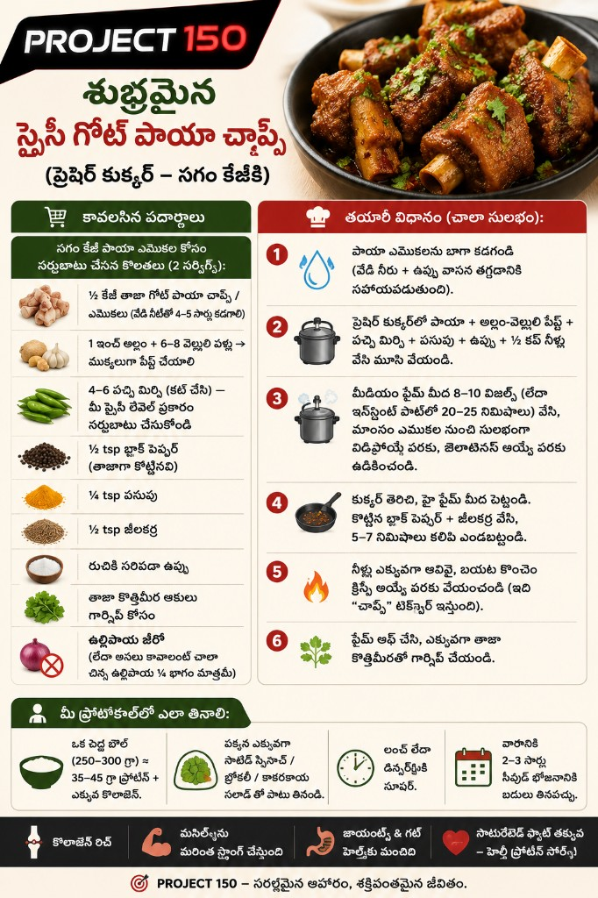
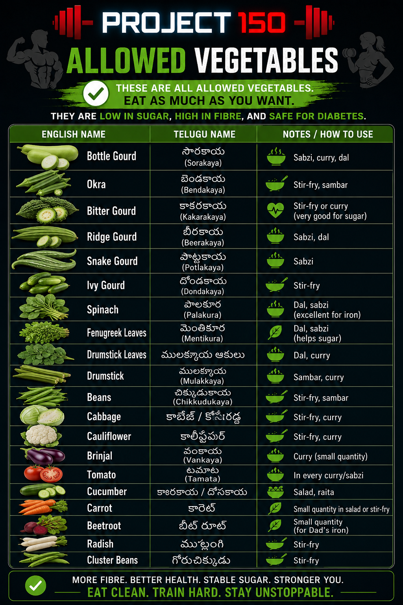
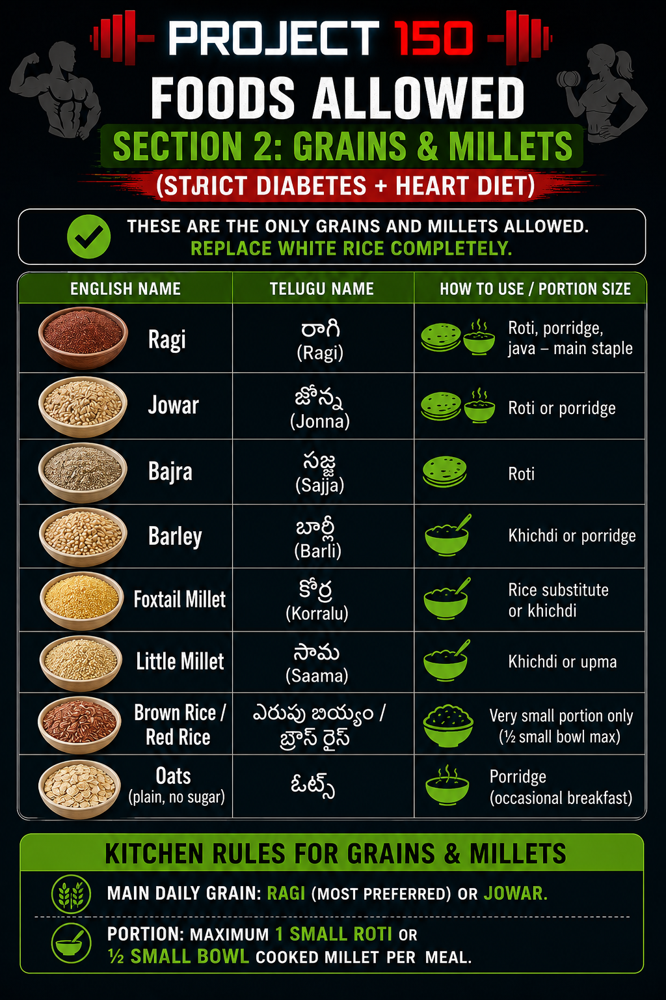
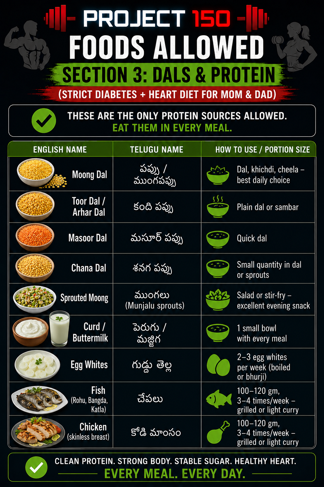
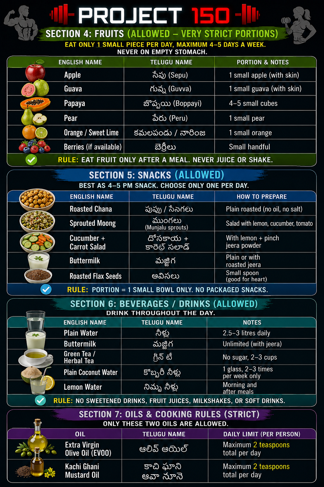
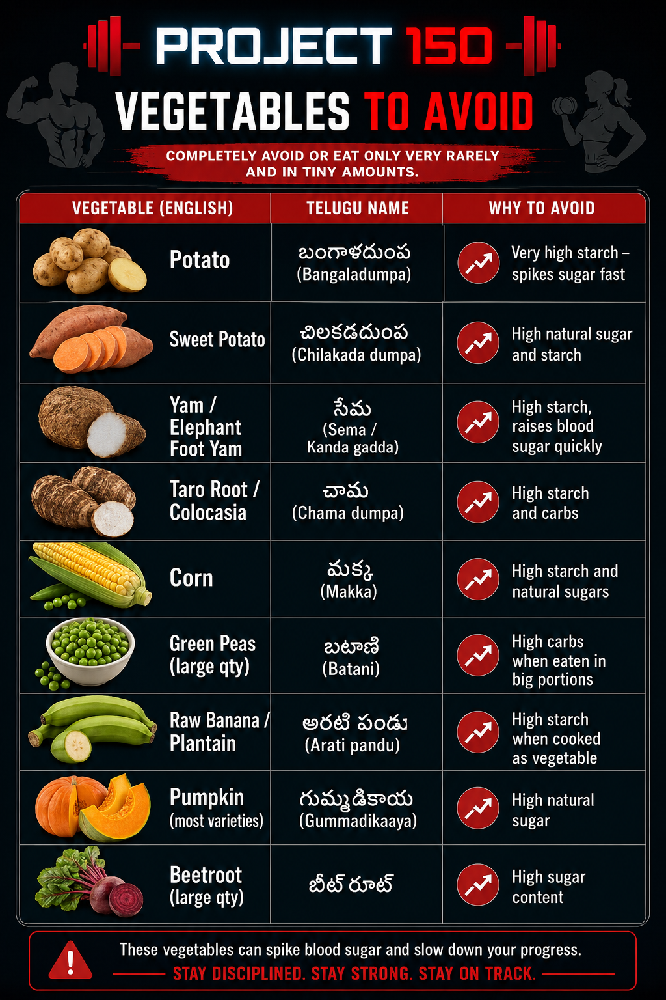

Simple Food.
Strict Consistency.
Traditional Telugu home cooking. Controlled portions. Fixed timings. No special diets required.
Warm water on waking. Light breakfast — egg or sprouts with a small whole grain serving. No sugar, no packaged food.
Largest meal of the day. Vegetable curry + dal + controlled portion of rice or two small rotis. Curd on the side. No fried items.
A small handful of mixed nuts, one seasonal fruit, or a glass of buttermilk. Nothing else.
Lightest meal. Vegetable soup or a small plate. No rice at night. Done by 7:30 PM wherever possible.
Featured Recipe
Family style · High protein · Controlled portions
This is a practical home recipe visual we use for family meal prep. We keep portions disciplined, pair it with vegetables, and avoid heavy oils.
Aaku kooralu, sorakaya, carrot, beans, cabbage, tomato, cucumber
Pappu, pesalu, senagalu, eggs, perugu (fresh curd)
Brown rice (controlled), whole wheat flour, ragi where possible
Nuts, flax seeds, lemon, ginger, garlic, turmeric, seasonal fruit
Foods Allowed
Strict Diabetes + Heart Diet



Foods to Avoid
Completely or very rarely, tiny amounts only